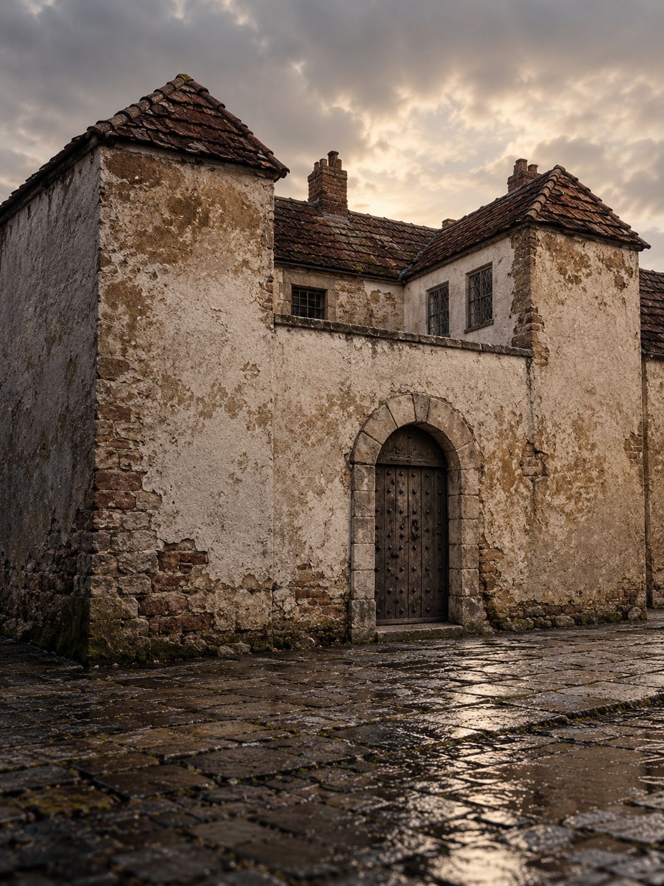
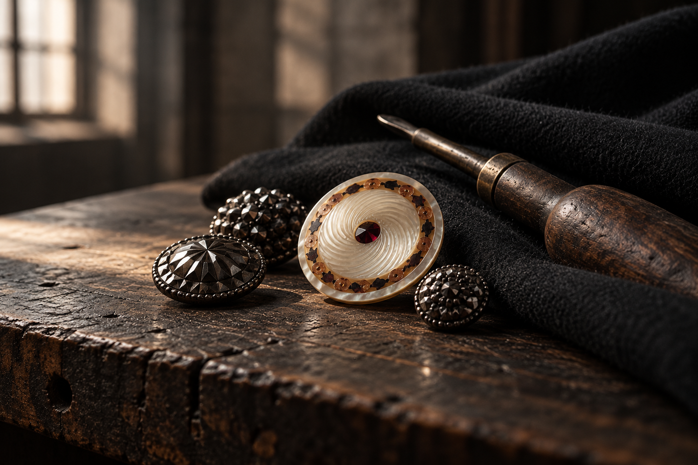

In Birmingham, making things came with a reputation to uphold.
Selling poor-quality goods could mean time in the stocks. Makers could be called to account in public for what they sold. Quality carried consequences.
“Don’t get caught selling poor quality goods”
Birmingham Museum / “Getting locked up”
Stand behind the work. Care in the making. Pride in the finish. Responsibility for the result. That is the standard NEWST carries forward.

02 / More than a place on a label
Birmingham gives us our perspective.
A city of trade, workshops and people whose work had to speak for itself. That is the spirit behind NEWST.
03 / Care in the smallest things
Small detail. Serious attention.
Birmingham’s buttons dressed fashionable coats and everyday clothes. Metal. Pearl. Cut steel. Small things that demanded skill and a good finish.

Pearl buttons were made by hand: the shell was cut and carved, the fasteners drilled, and the finished buttons attached to cards. Care, repeated at every stage.
For NEWST, that attention belongs in the clothes. The collar. The seam. The weight of a fabric. The details you notice when you wear something again.
04 / Built through trade
Making has always mattered.
1166
A market. A beginning.
In 1166, Peter de Birmingham obtained a charter to hold a weekly market. Craftspeople settled here. Traders came to sell. The market prospered.
People making things, bringing them to market and earning a place through their work.
New Street
Clothing belongs here.
Thomas Bate was a tailor and woollen draper in New Street. He supplied cloth and made it into clothes. Clothing was part of the street’s trade.
A tangible connection between a street, a city and the work of clothing people well. NEWST is building its own chapter.
05 / The energy of the city
“Its inhabitants work as if they must get rich by the evening and die the next day.”
Alexis de Tocqueville, 1835
That drive is part of Birmingham’s character. Our task is to give it a considered form.
06 / What we take forward
Make it with care. Stand behind it.
Quality starts with the choices we make: materials, fit, construction and the details that earn their place.
Our ambition is to make every NEWST garment in Birmingham. Collection 001 is where we begin, through sampling, testing and care in the development of each piece.